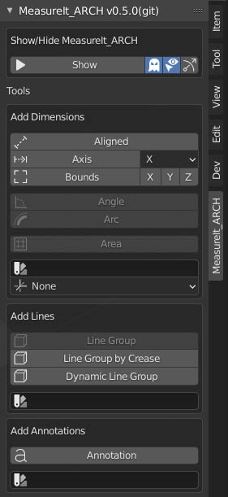

toc_depth: 0
Features & User Interface
Main Tool Panel

The main tool panel is where you can add MeasureIt_ARCH elements to your 3D scene. This panel is located on the right of the 3D Viewport. Tool panel visibility can be toggled by pressing the "n" key.
Show / Hide MeasureIt_ARCH Toggle
- Shows and hides all items created by MeasureIt_ARCH.
Selected Object Only Toggle (Ghost Icon)
- When disabled, MeasureIt_ARCH will only show elements attached to the currently selected objects.
Highlight Active (Cursor & Eye Icon)
- When enabled, the active MeasureIt_ARCH element will be highlighted in Blender's selection color.
Show Gizmos (Arrow Icon)
- When enabled MeasureIt_ARCH will show gizmos for all elements attached to the selected object.